1. First you need to download「LilithPort」. You can get it here or here
Note: You need .NET Framework 3.5 for Windows 10.
2. After you downloaded it, extract the file.
3. When you're done extacting, execute「LilithPort.exe」 .
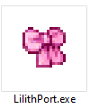
4. A new Program window will popup, It's will ask you for Server setting. Press the close button like the picture below :
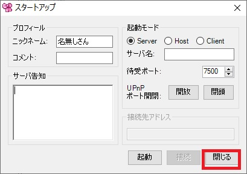
5. New Window popup again, just keep press OK!
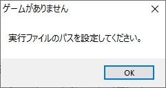
6. Locating the file「WonderfulWorld_ver_XXXX.exe」then choose it.
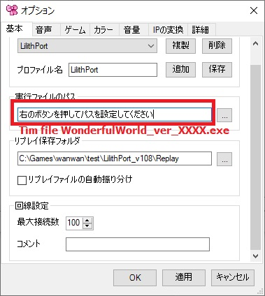
7. Write the name for your Profile box, save the Profile, then tick the checkbox below to auto arrange the Replay file list.
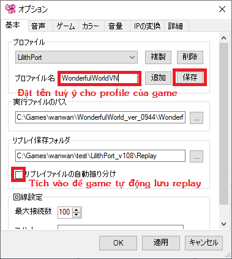
8. Go to the " ゲーム " (Game) tab and do the following settings:
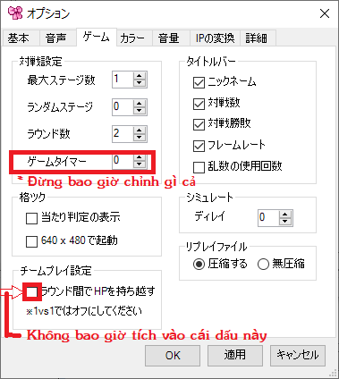
| 最大ステージ数 |
Maximium number of stages
Most japanese game had a lot of stage but WonderfulWorld had only 1 stage file.
Recommended set it to 1. |
| ランダムステージ |
Random Stages
Default should be 0
Because Wonderful World had only 1 stages. |
| ラウンド数 |
Round Numbers.
Default is 2 round.
|
| ゲームタイマー |
Game Timer.
Default is 0 (Infinite)
Do not change it because it's will break the game. |
| ラウンド間でHPを持ち越す |
Keep your Current HP in the next round.
Make sure it is UNCHECKED. Do not ever check it |
9. When you're done, using 「/game」 command to launch the game :
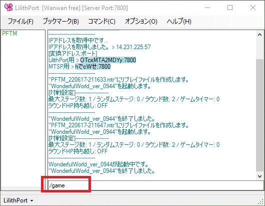
10. When you're seeing this, it's mean your game is linking to LilithPort successfully :
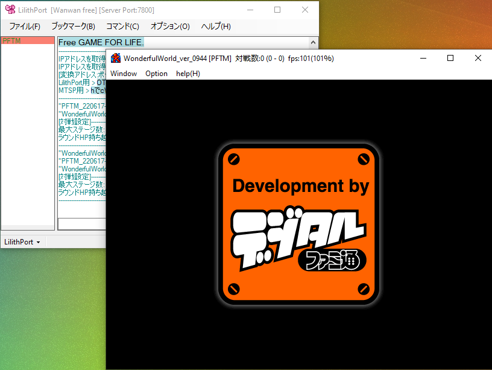
・「How to connect to Server/Lobby」
1. Using /restart command to relaunch the Server Settings:
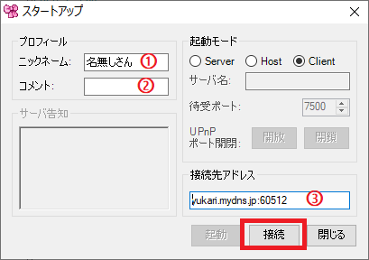
| ニックネーム |
Player name. |
| コメント |
Player custom messages |
| 接続先アドレス |
Server IP address, only base64 encoded IP or domain name is supported . |
| 接続 |
The Connect button, press it after you're done everything. |
2. After you're done connecting to server, the picture below is what you seen as server room:
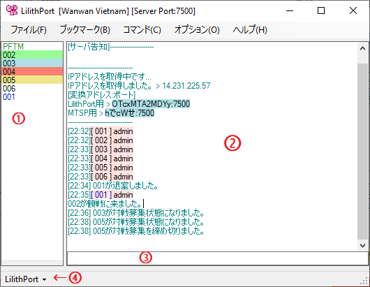
| ① |
This is the member list.
No Highlight means that the user is idle. You can attempt to battle them.
Yellow Highlight means they are in rest mode and you cannot battle them. To go into this mode yourself, type /rest in the chat line.
Red Highlight means that the user is currently battling. You cannot battle them.
Green Highlight means they are spectating a match and you cannot batlte them.
Blue Highlight means that the user is actively looking for a battle. Feel free to battle them!
Green nickname mean the server owner (SERVER)
Blue nickname mean the player had port open (HOST)
Black nickname mean the client who can only fight the (HOST) and (SERVER), also the (CLIENT) did open port. |
| ② |
This is the chatlog.
Messages appear here. |
| ③ |
This is the chat line.
You can type messages here. |
| ④ |
This is the Game profile.
You can easily select the game setting here. |
3. How to Battling Other Players/Spectating/etc
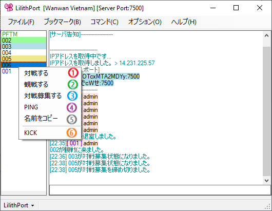
| ① 対戦する |
Challenge the player to a battle.
|
| ② 観戦する |
Spectate this battle. |
| ③ 対戦募集中する |
Set yourself to "ready to battle" status.
Click it again to turn it off . |
| ④ PING |
Pings the player.
The ping will appear in the chat box. This will give you an idea how much delay you might need. |
| ⑤ 名前をコピー |
copies the name of the user to the clipboard.
Useful when you want to mention someone in the chatbox. |
4. Misc info
You must set up your preferred control scheme to Player 1 side regardless of what side you end up in. LilithPort will automatically assign you to the correct side but use your Player 1 controls.
|